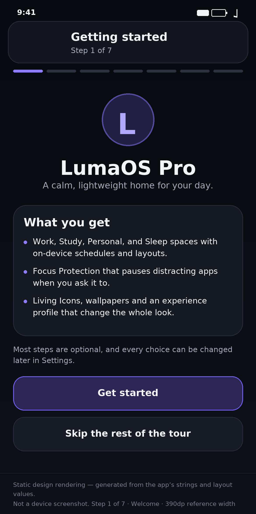
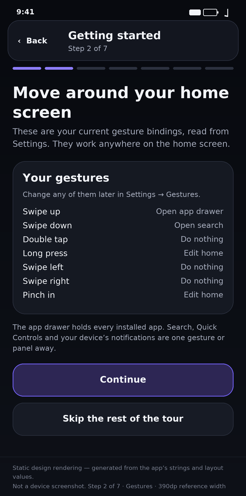
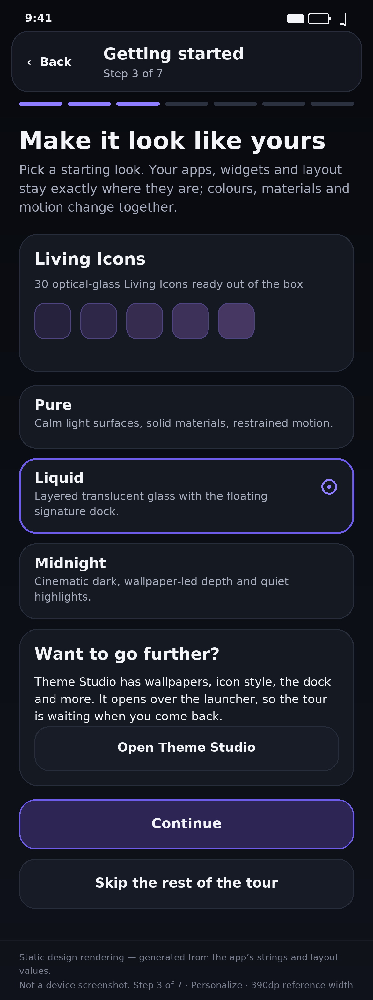
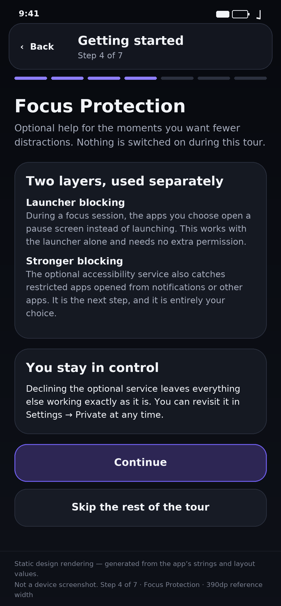
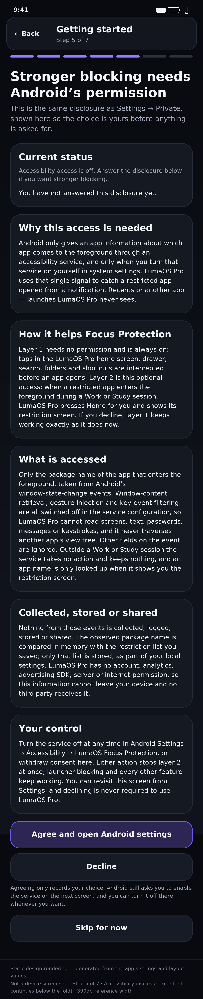
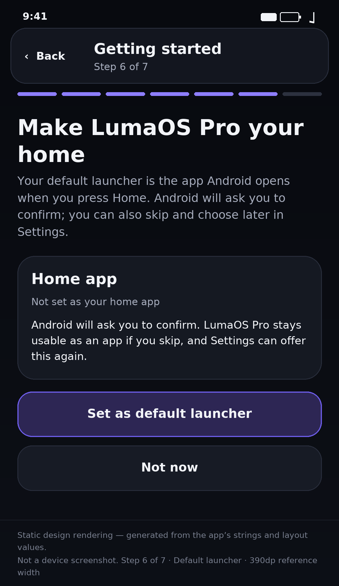
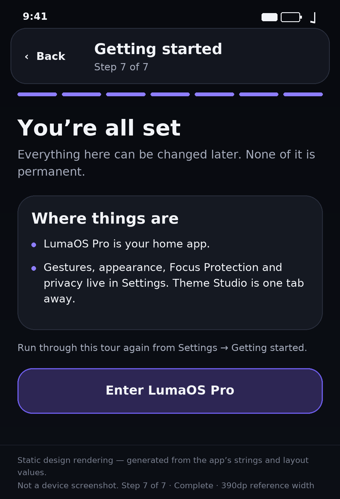

Reference renderings of the onboarding screens implemented in
onboarding/OnboardingScreens.kt, at a 390 dp reference width with the app's
strings read directly from res/values/*.xml.
These are static design renderings, not device screenshots.
They were generated in a workspace with no emulator, Android SDK or Gradle, from the real
strings and layout values. Verify appearance, TalkBack and gesture behaviour on a device
(see docs/QA_CHECKLIST.md, section D10c).

1 · WelcomeApp icon, one-line promise, three real capability points, Get started and Skip the rest of the tour.

2 · Gestures (optional)The user's live bindings from Settings → Gestures, not a hard-coded legend.

3 · Personalize (optional)Real Living Icons, the three experience profiles, and a route into Theme Studio.

4 · Focus Protection (optional)Both layers explained; nothing is enabled or requested on this screen.

5 · Accessibility (optional)The same disclosure and the same Agree/Decline actions as Settings → Private.

6 · Home appReal Home-role request, with "Not now" still completing the flow.

7 · CompleteSetup summary, replay hint, and the entry into the launcher.
Rendered from OnboardingScreens.kt + res/values/strings.xml and
res/values/strings_v2.xml. Dark appearance shown; the real screens follow the user's
resolved theme and text scale. Where a screen is taller than a phone viewport, the render shows
the full scroll content so every action is visible.